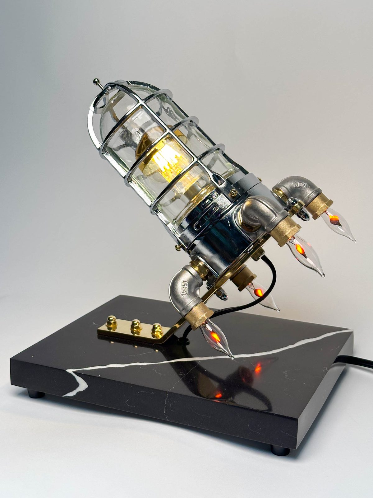

One-off lamps built from salvaged aircraft and electrical parts, polished stone, brass and chrome.
Rocket lamps and logo spinner lamps are available through Juliet Victor Aero. For anything else, just ask.

The Rocket Lamp starts with the stone. This version is built on a base of natural black quartz, defined by a striking white vein that runs through the rock. The contrast is sharp, the surface is polished, and the piece is entirely one of a kind.
The chrome lighting housing is supported by a thick 1.5" wide polished brass bar. The lamp features stainless steel and polished brass hardware throughout. Look closely at the top of the housing and you will find the rocket tip is a repurposed aircraft transponder antenna, the same component repurposed from real aircraft. Pilots will know exactly what they are looking at.
Lighting is built for flexibility. The on/off dimmer dial sweeps from ambient glow to full brightness. A two-stage brightness push button toggle operates independently for quick switching. Two complete sets of neon flame bulbs are included; they receive full power whenever the dimmer is in the on position. The lamp ships with a 7-foot cord and a wall hugger plug for flush mounting behind furniture or cabinetry. Height-adjustable anti-scratch rubber feet handle leveling on any surface.
| Base material | Natural black quartz with white vein |
|---|---|
| Base dimensions | 9.25" deep by 12.25" wide / ~14.25" with flame bulbs installed |
| Lamp height | ~13.25" |
| Housing finish | Chrome |
| Support bar | 1.5" bent polished brass |
| Hardware | Stainless steel and polished brass |
| Rocket tip | Repurposed aircraft transponder antenna |
| Primary bulb | Golden dome LED, 6W / 60W equiv., 2700K warm white, 50,000 hr rated life |
| Included bulbs | 2 complete sets of neon flame bulbs |
| Power | 120VAC, 7-foot cord, wall hugger plug |
| Dimmer | On/off switchable dial + independent 2-stage push button toggle |
| Feet | Height-adjustable anti-scratch rubber |
| Lamp weight | 16 lbs 11 oz |
| Hand-made in | USA |
The Rocket Lamp starts with the stone. This version is built on a base of absolute black granite, one of the deepest and most uniform natural stones available. Polished to a mirror finish, it anchors the lamp with serious visual weight.
The powder coated grey lighting housing is supported by a 1" bar sourced from repurposed copper bus bar, the same heavy-duty electrical conductor found in commercial aircraft power systems. The warm tone of the copper against the deep black granite gives this lamp a character entirely its own. Stainless steel and polished brass hardware complete the build. The rocket tip is a repurposed aircraft transponder antenna, and the dimmer knob is a repurposed autopilot servo gear — small details that reward a closer look. Pilots will know exactly what they are looking at.
The porcelain bulb base provides a classic, durable socket for the included golden dome LED. Lighting is controlled by an on/off dimmer dial. Two complete sets of neon flame bulbs are included and receive full power whenever the dimmer is in the on position. The lamp ships with a 7-foot cord and a wall hugger plug for flush mounting behind furniture or cabinetry. Height-adjustable brass-fastened anti-scratch rubber feet handle leveling on any surface.
| Base material | Absolute black granite, polished |
|---|---|
| Base dimensions | 12"x 7" |
| Lamp height | 13.5" |
| Housing finish | Powder coated grey |
| Support bar | 1" repurposed copper bus bar |
| Hardware | Stainless steel and polished brass |
| Rocket tip | Repurposed aircraft transponder antenna |
| Dimmer knob | Repurposed autopilot servo gear |
| Bulb base | Porcelain |
| Primary bulb | Golden dome LED, 6W / 60W equiv., 2700K warm white, 50,000 hr rated life |
| Included bulbs | 2 complete sets of neon flame bulbs |
| Power | 120VAC, 7-foot cord, wall hugger plug |
| Dimmer | On/off switchable dial |
| Feet | Height-adjustable anti-scratch rubber, brass fasteners |
| Lamp weight | 14 lbs 13 oz |
| Hand-made in | USA |
The Rocket Lamp starts with the stone. This version is built on a base of natural quartzite, polished to bring out a sweeping palette of warm cream, blush, and dusty rose crossed by bold charcoal and rust-brown veining. The movement in the stone is dramatic and entirely natural. No two pieces are the same.
The chrome lighting housing is supported by a 1.5" polished brass bar, with chrome, brass, and copper hardware and fittings throughout. The rocket tip is a repurposed aircraft transponder antenna. Inside the housing, a perforated stainless steel collar surrounds the bulb socket — an industrial detail that catches the light in its own right. The two-stage brightness push button toggle and on/off dimmer dial both sit on the brass support bar, giving you precise control over the mood of the lamp.
Four neon flame bulbs extend from the exhaust pipes of the rocket, each flickering independently for a dynamic, animated effect. Two complete sets are included — one to install, one to keep as spares. The neon flame bulbs receive power whenever the dimmer is in the on position. The golden dome LED provides warm, everyday illumination rated for 50,000 hours. The lamp ships with a 7-foot cord and a wall hugger plug for flush mounting behind furniture or cabinetry. Height-adjustable anti-scratch rubber feet handle leveling on any surface.
| Base material | Natural quartzite, polished |
|---|---|
| Base dimensions | 9" x 9" x 1" thick |
| Lamp height | 13.25" |
| Housing finish | Chrome |
| Support bar | 1.5" polished brass |
| Hardware | Chrome, brass, and copper, polished |
| Rocket tip | Repurposed aircraft transponder antenna |
| Bulb base detail | Perforated stainless steel |
| Primary bulb | Golden dome LED, 6W / 60W equiv., 2700K warm white, 50,000 hr rated life |
| Included bulbs | 2 complete sets of neon flame bulbs (install + spare) |
| Power | 120VAC, 7-foot cord, wall hugger plug |
| Dimmer | On/off switchable dial + independent 2-stage push button toggle |
| Feet | Height-adjustable anti-scratch rubber |
| Lamp weight | 13 lbs 12 oz |
| Hand-made in | USA |
The Rocket Lamp starts with the wood. This version is built on a solid oak base, lacquer finished to preserve the warm, natural grain of the wood. Light in tone, clean in character, and entirely its own piece.
The chrome lighting housing is supported by a polished aluminum bar sourced from repurposed aircraft spar material, the structural backbone of real aircraft wings. Hardware throughout includes brass fittings that complement the natural warmth of the oak base. At the top of the housing, the rocket tip is a repurposed aircraft transponder antenna. Pilots will know exactly what they are looking at.
Lighting is straightforward and effective. The on/off dimmer dial sweeps from ambient glow to full brightness. Two complete sets of neon flame bulbs are included and receive full power whenever the dimmer is in the on position. The lamp ships with a 7-foot cord and a wall hugger plug for flush mounting behind furniture or cabinetry.
| Base material | Lacquer finished solid oak |
|---|---|
| Base dimensions | 12" L x 7.25" D |
| Lamp height | 14.5" |
| Overall footprint with flame bulbs | ~13" L |
| Housing finish | Chrome |
| Support bar | Polished aluminum, repurposed aircraft spar material |
| Hardware | Aluminum and brass |
| Rocket tip | Repurposed aircraft transponder antenna |
| Primary bulb | Golden dome LED, 6W / 60W equiv., 2700K warm white, 50,000 hr rated life |
| Included bulbs | 2 complete sets of neon flame bulbs |
| Power | 120VAC, 7-foot cord, wall hugger plug |
| Dimmer | On/off switchable dial |
| Feet | Rubber |
| Lamp weight | 7 lbs 15 oz |
| Hand-made in | USA |
Rocket lamp and spinner lamp photos and descriptions courtesy of Juliet Victor Aero.
Most pieces are one of a kind. Send a note about anything you see here: price, colors, custom work, or where to see it in person.
Email Fuzelights